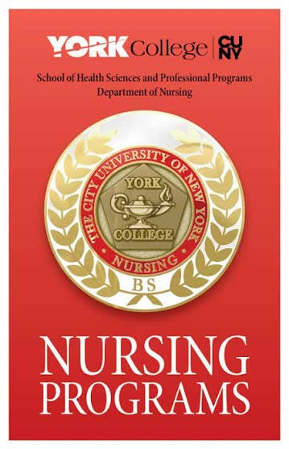

Admission Criteria

Covers the BSN program only — Generic BS and RN-BS tracks. The MS Nursing Education program isn't covered here.
Confirm before you apply
Requirements below are current as of this writing. The official Generic BS application page
has previously displayed RN-BS criteria by mistake (references RN licensure and junior-year
entry) — if you see that, it's a known copy-paste error, not a new requirement. Confirm with
the Department of Nursing or gbranch@york.cuny.edu if anything looks off.
Generic BS Track
- Five key pre-requisite courses: ENG 125, PSY 102, BIO 234, BIO 235, CHEM 106/107
- 3.0 GPA minimum across those five pre-req courses
- NLN NEX exam — 50th percentile minimum (see Start Here for exam setup)
RN-BS Track
- NURS 200 Challenge Exam — 80%+ required
- NURS 203 — C+ minimum
- Current, unencumbered NY RN license
Both Tracks
- Immigration status documentation (specific categories apply — confirm current list with the department)
- Criminal background check disclosure
Fall 2026 application deadline: May 25, 2026. The application link is
emailed in March — if it never arrives, contact
gbranch@york.cuny.edu.
Priority Seating
Up to 5 seats are reserved for students who started and maintained their entire college career at York, ranked by GPA + NEX score.